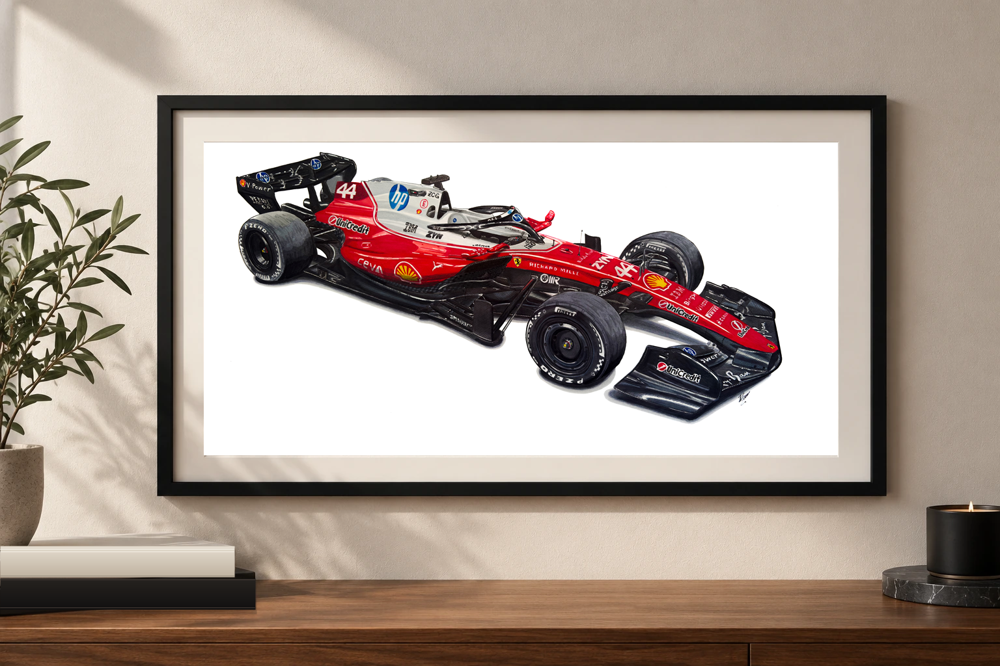
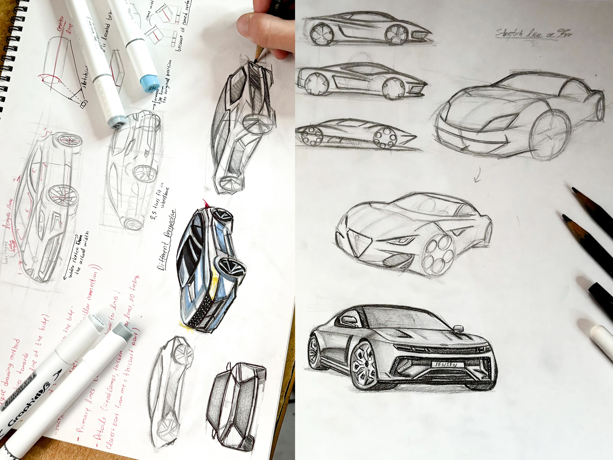
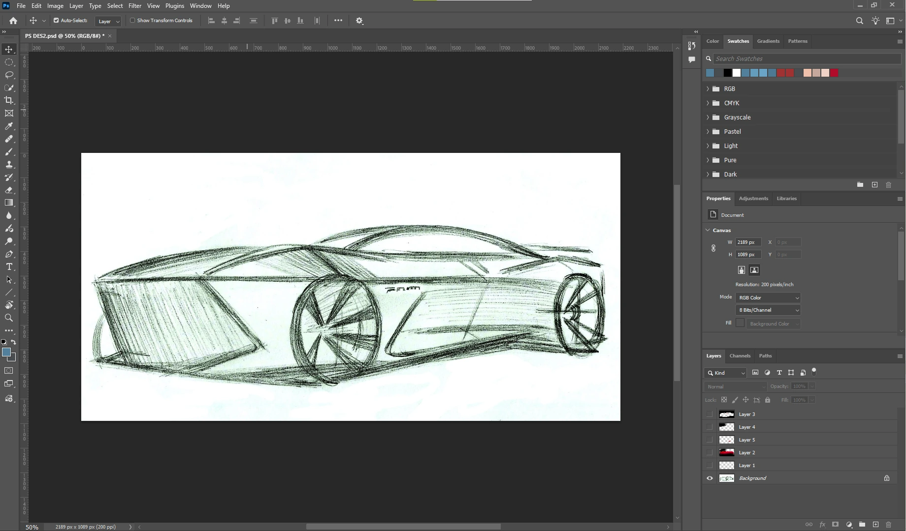
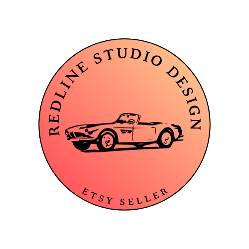

TRADITIONAL DRAWING · DIGITAL PRESENTATION
Automotive art
& digital design.
A different way to explore vehicle proportions, communicate visual ideas and develop attention to detail.

CREATIVE PRACTICE
Observing design.
Drawing the details.
Alongside my engineering background, I pursue automotive illustration through traditional drawing and digital image editing. This work develops attention to detail and helps me communicate visual ideas.
I use Adobe Photoshop to prepare and refine visual content and manage an independent Etsy shop featuring my automotive artwork.
01 / TRADITIONAL DRAWING
Automotive design fundamentals.
My automotive sketches are inspired by professional automotive design techniques and tutorials, focusing on vehicle proportions, perspective, body shapes and fine details.
Regular practice helps me develop my sketching technique and a stronger understanding of how to represent automotive design concepts on paper.


02 / DIGITAL DESIGN
Refining the presentation.
I use Adobe Photoshop to refine and prepare my automotive artwork for digital presentation, adjusting details and creating polished images for online display and promotion.

03 / INDEPENDENT CREATIVE WORK
My Etsy shop
I manage an independent Etsy shop featuring my original automotive illustrations as digital products. Through framed mockups, listing images and promotional content, I develop my skills in digital product presentation and online promotion.